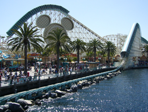

CALIFORNIA SCREAMIN'
<<< back to CALIFORNIA ADVENTURE
SPECS
Max Height: 120 ft.
Max Speed: 61 mph
Inversions: 1
Duration: 2 min. 36 sec.
Manufacturer: Intamin AG
REIVEW
California Screamin’ is a unique coaster for sure. It is a steel coaster but acts completely like a wooden one, except for the launch start and the famous loop around the Mickey. During the ride, music is blasted through speakers on the headrest to enhance the experience. The theme is a vintage boardwalk style area and being that it is Disney, they nail the environment. The ride itself is fast and has massive bunny hills, but without the Disney flair, it wouldn’t be the same (or as good).